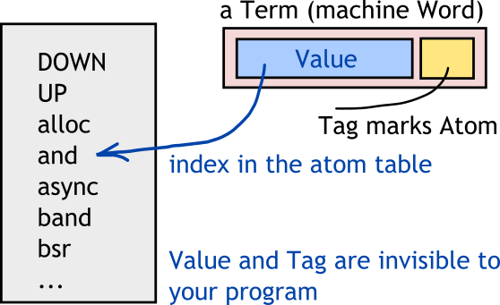

Atoms ELI5¶
{kind=link}
Atom table is a global table which maps internal atom value (an integer) to a
string. There is also the opposite lookup table, which maps a string to an
internal value. Atom table has a hard size limit: 1048576. If it is ever
reached, the node will crash — this is why creating atoms in runtime is a
risky idea. Atom table size is set with +t flag for erl.
Atom is a symbol which does not change its value in runtime. When a new atom is created, it gets a unique value for this node used as its value. Internally atoms are just integer values referring to atom table. This is why atoms operations are cheap.
BEAM loader routine reads atom values and looks them up in atom table. It replaces atom names with their integer values, tagged as Atom immediate. Henceforth the code manipulates immediate integer values instead of names.
These internal values cannot leave the node (over the network or on disk) as integers. This is because another node will have different numeric values for atoms. Thus when leaving the node atoms are always converted to strings. This affects BEAM files, external pids, external ports, atoms in Mnesia/DETS and so on. This is the reason why sometimes developers prefer short atom names for database field names — they will appear as strings in database data.